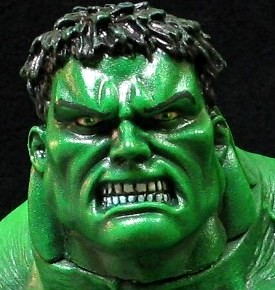

|

This is a custom I've been planning for a while. I wanted to make an over-the-top Hulk custom, almost more of a conceptual, exagerrated portrayal as you sometimes see in the comics. I used a rotocast movie Hulk figure for the body, shortened by about 1 1/4 inches to make it even bulkier. I used a head from the Hulk walkie-talkies, which is smaller than the rotocast version and makes the figure even more imposing. The paint is drybrushes of multiple shades of green, topped with a translucent "jubilent green" (ironically), that really makes the details of the sculpt stand out.
|